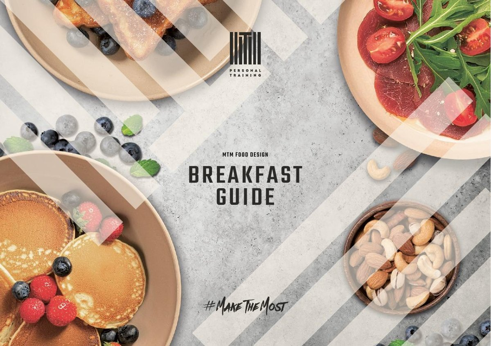
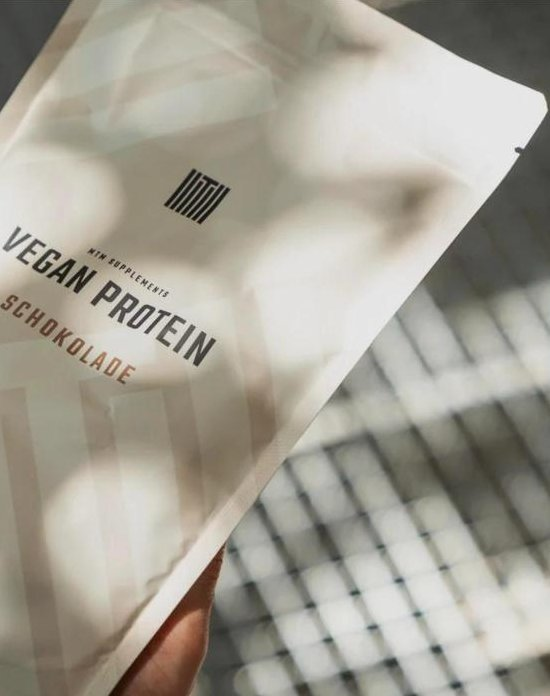

The brief
Build the marketing function of a personal training studio in Berlin from strategy to execution, and take the company’s first own products to market.
What came of it
- +20% click-through rate after introducing segmentation and win-back for the first time in the business.
- Around 250 Breakfast Guides sold within a few months.
- The webshop opened a new revenue stream for the company.
Decisions that mattered
Overview before activity
I started with a full overview of past marketing and what had not worked. From there I built a long-term strategic plan with goals, a short-term plan with goals, and an annual calendar and budget based on both.
Choosing the agency
I ran a tender among several digital agencies and chose the one with the best price, the best advice and weekly check-ins.
Who to win back
I focused on former members. Those who said in the exit survey that they left because of money got an offer, since their situation might have changed. Women who had left because of maternity leave were another key group.


The Breakfast Guide, where I led concept and art direction, and the MTM Supplements webshop, built together with others. Images: MTM.
What I did
- Strategy and agency. Wrote the marketing strategy and presented it to the owners. Managed the digital agency we chose with weekly follow-ups.
- A team of experts. Line managed four personal trainers who made content with me on the training floor, because they were the experts.
- First supplement line. Took it to market from positioning and campaign strategy to finished materials and a Shopify webshop, built together with others, then drove traffic to the shop with Meta and Google ads and followed the data myself.
- The Breakfast Guide. Built from scratch with a graphic designer, with me on concept and art direction, including the food photography and an icon system for dietary needs.
- CRM and content. Introduced customer segmentation and win-back for the first time, ran newsletters and email automations in Pipedrive and Zapier, and produced content and video for Instagram.
She always keeps the big picture in mind and works in a highly strategic and professional manner.